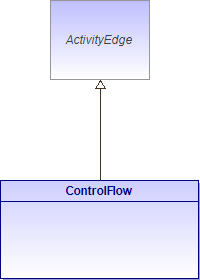

Edge that starts an activity node after the previous one is finished.
A control flow is an edge that starts an activity node after the previous one is finished.
Objects and data cannot pass along a control flow edge.
Figure 109 : ControlFlow (architecture_autodiagram)